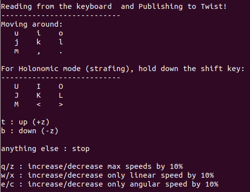

Roboti juhtimine¶
ROBOTONDI juhtimine¶
Seadistamine¶
Paigalda teleop twist keyboard
sudo apt update sudo apt install ros-melodic-teleop-twist-keyboard
Ava enda Androidi seadmes Google Play pood ning paigalda ROS Control app.
Loo roboti ja arvuti vahel ssh ühendus, nagu näidatud siin: Kaugteel robotisse sisenemine.
Käivita draiver
roslaunch robotont_driver driver_basic.launch
Roboti juhtimine teleop twist keyboardi abil¶
Ava uus terminali aken
Sisesta järgnev käsk:
rosrun teleop_twist_keyboard teleop_twist_keyboard.py __ns:=/robotontKasuta roboti liigutamiseks järgnevaid klahve:
Hoiatus
Sellest hetkest saab klahvivajutustega panna robotit eri suundades sõitma. Kui sa peaksid kaotama roboti üle kontrolli, tee üht järgnevatest:
- ROBOTI PEATAMISEKS VAJUTA „k“ KLAHVI!
- VAJUTA ROBOTIL OLEVAT PUNAST E-STOP NUPPU.
Vihje
Pane tähele, et klahvivajutused mõjuvad ainult siis kui terminaliaken on aktiivne.
Nõuanne
Sõlme peatamiseks kasuta
CTRL + C.
{kind=link}
Roboti juhtimine Android seadmega¶
Ava oma telefonis ROS Control rakendus
Insert the ROBOTONT’s IP address into Master URI field by entering the following:
http://robotont_IP_address:11311
Vajuta avanenud aknal „Show advanced options“ ja täida „Joystick“ ja „Odometry“ väljad järgnevalt: „robotont/cmd_vel“ ja „robotont/odom“
Click OK to add the robot
Nüüd saad listist roboti valida ja seda liigutada, kasutades juhtkangi nuppu.
Simuleeritud roboti juhtimine¶
Seadistamine¶
Paigalda teleop twist keyboard
sudo apt update sudo apt install ros-melodic-teleop-twist-keyboard
Ava enda Androidi seadmes Google Play pood ning paigalda ROS Control app.
Käivita draiver
roslaunch robotont_driver fake_driver.launch
Veendu, et fixed fame’iks oleks määratud „odom“!
Roboti juhtimine teleop twist keyboardi abil¶
Roboti juhtimine Android seadmega¶
Ava oma telefonis ROS Control rakendus
Sisesta enda arvuti IP aadress Master URI väljale
http://IP_address:11311
Vajuta avanenud aknal „Show advanced options“ ja täida „Joystick“ ja „Odometry“ väljad järgnevalt: „robotont/cmd_vel“ ja „robotont/odom“
Click OK to add the robot
Nüüd saad listist roboti valida ja seda liigutada, kasutades juhtkangi nuppu.